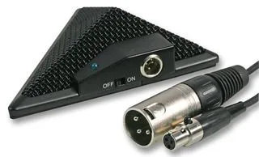

Browse All
Half Cardioid Condenser Boundary Microphone - Cased
A low profile half cardioid condenser microphone which is ideal for use on stage and at places of worship. Its compact design enables it to be desk or wall mounted capturing the sound without loss.
Heavy duty die cast body
Rubber non-slip base pad and strong steel screen
On/Off switch with LED indicator
Filter switch: Flat or Bass roll-off to reduce stage rumble
Pad switch: -10dB
Requires 9-52V DC phantom power
2x Key hole slots on base for wall mounting
Contents
Supplied with foam lined hard case and 4m mini XLR to XLR lead
Heavy duty die cast body
Rubber non-slip base pad and strong steel screen
On/Off switch with LED indicator
Filter switch: Flat or Bass roll-off to reduce stage rumble
Pad switch: -10dB
Requires 9-52V DC phantom power
2x Key hole slots on base for wall mounting
Contents
Supplied with foam lined hard case and 4m mini XLR to XLR lead
CategoryOther Equipment
RangeBrowse All
Weight1.0 kg
Tagsphantom, ct-07a, pulse, mic, xlr, boundry